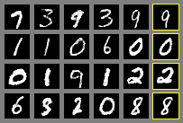

第 23 章 生成模型基础：VAE 与 GAN
💡 本章导读
在扩散模型统治文生图之前，生成学习有两个奠基性范式：VAE（变分自编码器，教我们"概率地"看待生成——似然、隐变量、推断网络）与 GAN（教我们"对抗地"看待生成——判别器就是学习信号）。两者都已不再是图像生成的主角，但它们的思想以三种方式活在今天的多模态系统里：VAE 是 Stable Diffusion 的压缩底座（第 25 章），VQ-VAE 谱系是原生多模态的字母表（第 2、19 章），GAN 的对抗损失仍是感知质量的调味料（超分、人脸、tokenizer decoder）。本章把两套数学完整推导一遍——它们是读懂第 24–29 章所有扩散/自回归公式的前置技能。
💡 技巧：读生成模型论文前的"目标定位三问"
拿到一篇生成模型论文，先问三个定位问题再进正文：①它优化什么信号？（似然/下界/对抗/回归——决定可训练性上限）；②它的表示是连续还是离散？（决定能否与 AR 语言模型统一）；③它的采样是单步还是迭代？（决定部署成本）。三问的答案构成论文的"坐标"，本章表 23-1 就是这些坐标的地图集。后续章节的每个模型都能在这张地图上找到位置——读新论文时不妨自己往上贴。
1.生成模型的地图：我们到底想要什么
"生成模型"是一个被滥用的词，先把目标说清楚。给定数据分布 $p_{\mathrm{data}}(x)$（我们只有样本），生成模型想学一个 $p_\theta(x)$ 使其逼近真分布。按"能否计算与采样"的能力分三类：①显式似然模型——能写出 $\log p_\theta(x)$ 并优化（VAE、自回归、扩散、流模型）；②隐式模型——不能写似然但能采样（GAN）；③能量模型——写出未归一化的能量（EBM，训练难）。再按"表示"分：连续隐变量（VAE）、离散 token（VQ/AR）、分数/噪声尺度（扩散）。
| 模型 | 似然 | 采样质量 | 采样速度 | 在多模态系统中的角色 |
|---|---|---|---|---|
| VAE | 下界（ELBO） | 模糊 | 一次前向 | SD 的压缩底座 |
| GAN | 无（隐式） | 锐利但窄 | 一次前向 | 感知损失/超分/老式 T2I |
| VQ-VAE/VQGAN | 下界+先验 | 好（配 AR 先验） | AR 逐 token | Chameleon/Emu3 的 tokenizer |
| 扩散（DDPM→SD3） | 等价/下界 | 最强 | 多步迭代 | 文生图/视频主角 |
| 自回归（DALL-E/Parti） | 精确 | 好 | 逐 token | 统一模型的理解+生成 |
| 流匹配（Flux/SD3） | 等价（ODE） | 最强 | 少步 | 新一代 T2I 主流 |
这张表的阅读方式：每一列都是一种权衡，没有全面赢家。扩散赢在质量、输在迭代成本；GAN 赢在速度、输在训练稳定性与多样性；自回归赢在似然可算与序列统一、输在逐 token 的累积误差。理解每个范式的"为什么输"与"为什么赢"，比记住谁拿了 SOTA 更重要——因为 2025–2026 的前沿（流匹配、统一模型）正是在重新排列这些权衡。
还有一层"目标差异"要预先澄清：理解模型与生成模型对表示的要求不同。理解（判别）只需要保留"区分类别/语义"的信息，可以扔掉一切细节；生成必须保留"重建数据分布"的全部信息，包括高频纹理——这就是为什么同一个架构（ViT）做判别是小模型就够、做生成要巨大算力，也是为什么"判别预训练的表示当生成底座"总有信息缺口（第 14 章的 CLIP 盲点）。本章之后，每当看到"重建损失 vs 对比损失 vs 判别损失"的选择，都应回到这层目标差异来理解。
2.VAE：变分推断与 ELBO 的完整推导
VAE（Kingma & Welling, arXiv:1312.6114，ICLR 2014）要解决的问题：隐变量模型 $p_\theta(x)=\int p_\theta(x\mid z)p(z)\,dz$ 的似然无法直接计算（积分遍历全部隐变量 $z$）。VAE 的答案是变分推断：用一个可学习的近似后验 $q_\phi(z\mid x)$ 来绕开积分。
📐 理论推导：从对数似然到 ELBO，一步不跳
第 1 步：对数似然可以恒等变形（对任意 $q_\phi(z\mid x)$）：
（第 2 个等号用 $p(x,z)=p(z\mid x)p(x)$；第 3 个等号加减 $\log q_\phi$。）
第 2 步：第二项是 KL 散度，恒 ≥ 0，于是得到下界：
且等号成立当且仅当 $q_\phi(z\mid x)=p_\theta(z\mid x)$——ELBO 与真对数似然的差就是推断误差，这让"优化 ELBO"有了精确的含义。
第 3 步：把 ELBO 拆成可解释的两项（用 $p_\theta(x,z)=p_\theta(x\mid z)p(z)$）：
训练目标 $\max_{\theta,\phi}\mathrm{ELBO}$：编码器 $q_\phi$ 把 $x$ 压到 $z$，解码器 $p_\theta$ 从 $z$ 重建——重建项要"保真"，正则项要把 $q_\phi$ 拉向先验 $p(z)=\mathcal{N}(0,I)$（使采样 $\hat z\sim p(z)$ 时解码器也能生成）。用一个比喻收拢直觉：VAE 像一家"有纪律的翻译社"——编码器是口译（把图像译成隐语 $z$），解码器是笔译（还原成图），正则项规定"隐语必须是标准普通话（高斯）"而非口译员自创的黑话；有了这条纪律，公司才能凭空请一位"说标准普通话的客人"（$\hat z\sim p(z)$）让笔译出稿——这就是生成。这个"编码-解码-拉向先验"的三明治结构，是所有变分方法（VQ-VAE、SD 的 VAE、还有 RL 里的变分推断）的共同骨架。
从估计的角度看，ELBO 的蒙特卡洛估计只需一个样本 $z\sim q_\phi$（单样本估计，方差可控）：$\widetilde{\mathrm{ELBO}}=\log p_ heta(x|z^{(1)})-\mathrm{KL}(q_\phi(z|x)\|p(z))$。批训练时整个 batch 共享"一份噪声"——这也是 VAE 训练如此便宜的原因：每样本一次编码、一次解码、一次闭式 KL。对比"逐样本迭代推断"（传统 VI 每更新一次参数都要重跑优化），"摊销推断"的成本优势是数量级的——这是 Kingma 论文标题里 "Auto-Encoding" 的真正含义。
📄 论文精读：Auto-Encoding Variational Bayes（Kingma & Welling, ICLR 2014, arXiv:1312.6114）
问题：连续隐变量模型的似然积分难算、后验难推，变分推断传统上依赖逐样本优化（慢）。方法：SGVB 估计器——用重参数化把 ELBO 变成可反向传播的蒙特卡洛估计；推断网络 $q_\phi(z|x)$（编码器）与生成模型联合训练，把变分推断"摊销"进一次前向。关键结果：MNIST/Frey Faces 上与传统变分方法同精度、快一个数量级；后续被推广为"深度生成模型 + 推断网络"的标准框架。为什么重要：它把"概率图模型"与"深度学习"焊接在一起——SD 的 VAE、VQ-VAE 的 EMA 码本、RL 中的变分世界模型，全部生活在这个框架里；"摊销推断"更是现代自监督与生成模型共享的架构思想。延伸阅读： Rezende et al.（arXiv:1401.4082）同期独立工作；Kingma 的后续（Normalizing Flows, arXiv:1410.8516）通向流的路线。
3.重参数化与后验坍塌
重参数化技巧（reparameterization）解决"采样不可导"：直接从 $q_\phi=\mathcal{N}(\mu_\phi(x),\sigma_\phi(x))$ 采样 $z$，梯度无法穿过随机节点。改写为 $z=\mu_\phi(x)+\sigma_\phi(x)\odot\epsilon,\ \epsilon\sim\mathcal{N}(0,I)$——随机性被移出计算图，$\mu,\sigma$ 的梯度畅通。这个技巧是"随机性进入深度学习"的通用解法（RL 中的 reparam 策略梯度、扩散模型本身就是它的宏大版本）。
后验坍塌（posterior collapse）是 VAE 的经典病理：当解码器足够强（如自回归语言模型），它可以无视 $z$ 直接拟合 $p(x)$，此时 $q_\phi$ 被正则项推成先验 $\mathcal{N}(0,I)$——隐变量被"架空"，VAE 退化成普通自编码器。形式化：$\mathrm{KL}(q_\phi\|p)\to 0$ 且互信息 $I(x;z)\to 0$。缓解手段：KL 退火（训练早期给正则项降权）、free bits（KL 低于阈值不罚）、更弱的解码器、或在文本场景里干脆接受——GPT 式 AR 模型的隐变量塌缩正是第 19 章讨论的"语言税"的近亲。
💡 技巧：VQ-VAE 是"离散化的 VAE"，但绕开了坍塌
VQ-VAE（arXiv:1711.00937）把连续隐变量换成码本查表：$z_e(x)=e_k$（最近邻码字），梯度用直通估计器（straight-through）穿过去。先验 $p(z)$ 不再是高斯而是可学习的离散分布（后来直接用 AR 模型建模）。它没有后验坍塌问题——因为离散码字的"排他性"天然携带信息——代价是码本利用率难题（dead codes）与量化误差（第 19 章的"tokenizer 玻璃化"正是它的多模态版）。SD 选择连续 VAE 而非 VQ，也因为连续潜变量对重建的保真更高；而 AR 统一模型必须选 VQ——这是"目标函数决定表示"的又一次上演。
4.GAN：对抗博弈的数学
与 VAE 的"概率翻译社"对照，GAN 的直觉是"伪钞制造者 vs 银行验钞员"的军备竞赛：$G$ 造伪钞（从噪声 $z$ 生成样本），$D$ 验钞（输出"是真的概率"），双方在对抗中各自升级，直到伪钞与真钞无法区分（$p_g=p_{\mathrm{data}}$）。这个比喻的三层含义都对应数学：①"验钞员也在进步"=内层优化 $D$ 到最优；②"伪钞无法区分"=JS 散度归零；③"双方都可能有歪招"=模式崩溃与不稳定的根源。
GAN（Goodfellow et al., arXiv:1406.2661，NeurIPS 2014）把生成变成两人博弈：生成器 $G(z)$ 造样本，判别器 $D(x)$ 辨真假，极小极大目标：
📐 理论推导：最优判别器与 JS 散度（原文命题 1 的完整版）
第 1 步：固定 $G$，$V(D)$ 是关于 $D$ 的泛函。对任意 $x$，被积项 $a\log D + b\log(1-D)$（$a=p_{\mathrm{data}}(x)$，$b=p_g(x)$）在 $D^*(x)=\frac{a}{a+b}$ 处最大（求导置零），即
第 2 步：代回 $V$，可得（除以 2 归一化后）：
其中 JS 是 Jensen–Shannon 散度。因为 $\mathrm{JS}\ge 0$ 且在两分布重合时取 0——全局最优解是 $p_g=p_{\mathrm{data}}$、$C(G)=-\log 4$，此时 $D$ 处处输出 1/2，博弈收敛。
第 3 步（实践的裂缝）：理论成立的前提是"内层 $D$ 可优化到最优"，而这正是实践做不到的——训练早期 $p_g$ 与 $p_{\mathrm{data}}$ 几乎不相交，$D^*$ 可以轻松 perfect 分类，$\log(1-D(G(z)))$ 饱和、$G$ 得不到梯度。于是有非饱和替代目标 $\max_G \log D(G(z))$（同一不动点、更好的早期梯度）。理解了这条裂缝，就理解了 GAN 十年"炼丹史"的一切：W-GAN 的权重裁剪/梯度惩罚（把 JS 换成 Wasserstein 距离，k-Lipschitz 约束）、谱归一化、TTUR、扩散模型用"直接回归"绕开整个博弈。
补充一个理论视角的收敛：JS 散度在两分布支撑不重叠时常数化（梯度消失），而 Wasserstein 距离即使不重叠也提供连续、有意义的梯度——这正是 WGAN 在理论上"更可训练"的根源，也是后来"避开散度、直接回归"思路（扩散、流）的哲学先声。读 2017–2020 年的 GAN 论文时，可以用"这个设计在多大程度上恢复了梯度流"作为统一的分析框架。

📄 论文精读：Generative Adversarial Nets（Goodfellow et al., NeurIPS 2014, arXiv:1406.2661）
问题：能否绕开显式似然与 MCMC，直接训练一个采样器？方法：生成器与判别器的极小极大博弈；理论部分给出最优判别器、JS 散度等价与全局最优性；实践部分用"交替训练 k 步 D、1 步 G"的非饱和损失。关键结果：MNIST/CIFAR/Toronto Face 上生成质量超过同期 VAE；理论证明 $p_g=p_{data}$ 时收敛。为什么重要：开创"对抗学习"范式——它的影响远超生成：判别器作为学习信号的思想活在 RLHF 的奖励模型、对比学习、域适应（DANN）里；"博弈训练"的稳定性问题则催生了整个博弈优化研究方向。批判性阅读：原文的收敛证明依赖"每步内层最优"的非参数假设，深度网络实践中不成立——这一点原文诚实标注了（Proposition 2 的 caveat），读论文时值得学习这种"理论-实践差距"的写法。
5.模式崩溃与训练诊断
模式崩溃（mode collapse）：$G$ 把全部概率质量押在少数"安全"输出上（比如人脸生成只出正脸），$p_g$ 的多样性远小于 $p_{\mathrm{data}}$。它不是 bug 而是博弈的理性解——对一个判别器来说，"精确模仿最可能骗过它的几个模式"是低风险策略。诊断与缓解的工具箱：
| 症状 | 诊断信号 | 处方 |
|---|---|---|
| 模式崩溃 | 多样本输出雷同；D 损失快速趋零 | mini-batch 判别、多样性正则（Diversity）、unrolled GAN、数据增强 |
| 训练振荡不收敛 | D/G 损失互追的持续波动 | TTUR（D 学习率高于 G）、谱归一化、减小步长 |
| 梯度消失（早期） | G 损失饱和不动 | 换非饱和损失 / WGAN-GP |
| 纹理伪影 | 周期性格子纹 | 转置卷积换 upsample+conv、检查归一化 |
| 评估失真 | IS 高但 FID 差 | 以 FID（与真分布的特征距离）为准，IS 只看类间 |
FID（Fréchet Inception Distance）值得专门一提，因为它是后续所有生成评测（含 VBench、GenEval 的前身）的基石：把真实图与生成图分别过 Inception 网络取特征，各自拟合成高斯，计算两个高斯的 Fréchet 距离：
FID 的优点是与真分布比较（而非只看生成集自身的"类内锐利度"），对模式崩溃敏感；缺点是依赖 Inception 特征、对单类生成偏差、样本数敏感（≥5 万张才稳定）。理解 FID 的这些性质，第 27 章读各家 T2I 评测时才不会被数字迷惑。
# FID 的最小实现（理解它，才能正确使用它）
import torch
@torch.no_grad()
def fid_score(feats_real, feats_gen):
"""feats: [N, D] —— 通常取 Inception-V3 pool3 层的 2048 维特征"""
def gaussian_stats(f):
mu = f.mean(0)
sigma = torch.cov(f.t()) + 1e-6 * torch.eye(f.shape[1], device=f.device)
return mu, sigma
mu_r, sg_r = gaussian_stats(feats_real)
mu_g, sg_g = gaussian_stats(feats_gen)
diff = mu_r - mu_g
# Tr(sqrt(S_r S_g)) 用特征值法（数值稳定写法见 scipy.linalg.sqrtm）
eigvals = torch.linalg.eigvals(sg_r @ sg_g).real
tr = eigvals.clamp(min=0).sqrt().sum()
return (diff @ diff + torch.trace(sg_r) + torch.trace(sg_g) - 2 * tr).item()
# 实践要点：
# 1) 样本数 ≥ 50k（少了会显著高估 FID）
# 2) 比较 FID 必须同特征网络、同预处理、同样本数
# 3) FID 低 ≠ 好：它对"记忆训练集"不敏感（可加 KID/精确查重）🕰 历史一刻：2014–2020，GAN 的黄金五年与谢幕
GAN 的五年是深度学习史上最密集的"军备竞赛"之一：DCGAN（2015，卷积结构规范）→ WGAN（2017，损失理论化）→ Progressive GAN（2018，渐进训练 1024px）→ BigGAN（2019，大规模类条件）→ StyleGAN 系（2019–2021，风格调制与解耦，至今仍是人脸生成的质量标杆）。2020 年 DDPM 在 CIFAR-10 上首次以 FID 超越 GAN（arXiv:2006.11239 表 1），2021 年扩散在 ImageNet 上全面胜出——五年竞赛谢幕。谢幕的原因不是"GAN 不好"，而是扩散把"生成的质量"从"博弈的平衡"转移到"回归的目标"——可训练性完胜。但 GAN 的遗产（谱归一化、感知损失、patch 判别器、渐进训练思想）散落在今天的每个视觉系统里。
6.它们如何活在今天的多模态系统里
用三个"今天的系统"验证本章思想的生命力。
①Stable Diffusion 的 VAE：SD 的第一步是把 512×512×3 图像压缩到 64×64×4 的潜空间（8×8 倍空间压缩，48 倍信息压缩）——这个 VAE 是"感知优化的自编码器"（重建损失 + KL 约束 + 判别器 patch 感知损失，作者称 autoencoder 的 KL 项权重极小，主要防止潜空间方差爆炸）。SD 训练扩散模型时 VAE 完全冻结——它是"压缩器"而非"生成器"，生成全部交给潜空间的扩散过程。第 25 章的架构解剖会回到这里。
②Chameleon/Emu3 的 VQ tokenizer：第 19 章已详述——VQGAN 的 decoder 重建质量直接封顶生成质量；GAN 的对抗损失正是 VQGAN decoder 保持纹理锐利的关键成分（纯重建损失会得到模糊的 decoder）。
②.5 复活条件与学习价值：2026 年学习 GAN 还有价值吗？有——但学的是三样"可迁移资产"：博弈训练的工程直觉（任何含对抗成分的训练都需要：RLHF 的奖励黑客、对抗鲁棒性训练、生成式奖励模型）；判别器作为感知度量（今天所有的"感知损失""奖励模型"都是它的后代）；以及"训练不稳定的诊断学"（振荡、坍缩、饱和——在多模态 RL 与对抗评测里全部重现）。学结构（DCGAN 的卷积配方）意义不大，学"博弈动力学"意义恒久。
③GAN 作为"后处理器"的常青用法：Real-ESRGAN（超分）、GFPGAN（人脸修复）、CodeFormer——在扩散管线的最后一公里（放大、修脸）仍是 GAN 的天下，因为单步前向的速度与"对着感知质量优化"的判别器设计，在这个细分场景无可替代。ComfyUI 工作流（第 45 章）里的 upscaler 节点，跑的就是 GAN。
④tokenizer decoder 的感知损失（第 19 章的延伸）：VQGAN 的 decoder 用 patch 判别器（70×70 的 PatchGAN，来自 pix2pix）保持纹理锐利——纯 L1/L2 重建必然模糊，判别器给了"哪里不像真的"的精细梯度。这个"重建+对抗+感知（VGG 特征距离）"的三重损失组合，是所有图像 tokenizer 与超分系统的标准配方。它也是 GAN 思想最深远的遗产：对抗不再负责"生成"，而是负责"定义感知质量的梯度"——判别器从裁判变成了教师。同理，RLHF 的奖励模型（第 7 章）本质上是一个"文本判别器"，DPO 的隐式奖励是一个"无需训练的判别器"——判别即信号的思想，从 2014 年至今贯穿了生成与对齐两条主线——这是本章在全书中的隐秘地位：它不只是"生成前置课"，更是对齐技术（第 7、37 章）的思想源头之一。
🍳 实战配方：什么时候"复活"GAN
2026 年再训 GAN 的合理场景清单：①配对/非配对翻译与修复的快速基线（pix2pix/CycleGAN 思想仍是最快路径）；②感知质量后处理（超分/修脸/风格化 decoder）；③tokenizer 的 decoder 训练（VQGAN 的判别损失）；④端侧实时生成（一步前向的延迟优势，如移动端人脸滤镜）。不该用：通用 T2I（质量与多样性被扩散/流碾压）、需要似然的应用、大分辨率从头训练（渐进训练复杂度高且收益不如扩散+蒸馏）。一句话：GAN 从"生成主角"转型为"感知质量工具人"——转型的边界要清楚。
从 ELBO 出发还能快速理解一个"逆向问题"：为什么自回归语言模型不适合当 VAE 的解码器？因为 AR 解码器太强（逐 token 条件完整前缀），重建项可以不依赖 $z$ 就做得很低——这正是后验坍塌的机制视角。同样的逻辑解释了为什么 SD 的 VAE "很弱"（把保真任务交还给扩散过程），以及为什么第 19 章的"语言税"在 AR 统一模型里难以根除——强解码器与隐变量信息注入之间存在结构性张力，这个张力会以不同面目反复出现在生成章节里。
VAE 家族的后续演进也值得一张速查表，因为"读论文时认出变分结构"是高频技能：β-VAE（把 KL 项乘 β>1，学出解耦的隐因子——解释为对先验匹配的更强约束）；CVAE（条件 VAE，所有项加条件 y——可控生成的最早框架）；VQ-VAE/VQGAN（离散码本）；NVAE（分层残差后验，似然纪录）；Skip-VAE 与 SD-VAE（面向重建保真的工程化）。共同点：都在"重建-正则"的天平上找不同的平衡点——理解了 ELBO 的两项，就理解了整个家族的设计空间。
| 变体 | 相对 VAE 的改动 | 动机 | 今天的遗产 |
|---|---|---|---|
| β-VAE | KL 项 ×β | 解耦表示 | 可控生成的权重调节思想 |
| CVAE | 全条件化 | 可控生成 | 条件生成的基本框架 |
| VQ-VAE/2/VQGAN | 离散码本 + AR 先验 | 锐利重建、序列化 | Chameleon/Emu3 tokenizer |
| NVAE | 分层残差 | 似然上限 | 层级潜变量思想 |
| SD-VAE（KL-f8） | 感知损失、极小 KL | 压缩底座 | Stable Diffusion 全系 |
7.动手实践：极简 VAE 训练
# 60 行的 VAE：把 ELBO 三项写进代码（MNIST）
import torch, torch.nn as nn
class VAE(nn.Module):
def __init__(self, d_in=784, d_h=400, d_z=20):
super().__init__()
self.enc = nn.Sequential(nn.Linear(d_in, d_h), nn.SiLU())
self.mu = nn.Linear(d_h, d_z); self.logvar = nn.Linear(d_h, d_z)
self.dec = nn.Sequential(nn.Linear(d_z, d_h), nn.SiLU(),
nn.Linear(d_h, d_in))
def forward(self, x):
h = self.enc(x)
mu, logvar = self.mu(h), self.logvar(h).clamp(-10, 10)
z = mu + (0.5 * logvar).exp() * torch.randn_like(mu) # 重参数化
return self.dec(z), mu, logvar
def elbo_loss(model, x):
recon, mu, logvar = model(x)
# 重建项：Bernoulli 似然（也可换 MSE=Gaussian 似然）
log_p = -torch.nn.functional.binary_cross_entropy_with_logits(
recon, x, reduction="none").sum(1).mean()
# 正则项：闭式 KL(N(mu,sigma)||N(0,I))，三项展开
kl = 0.5 * (mu.pow(2) + logvar.exp() - 1 - logvar).sum(1).mean()
return -log_p + kl, {"recon": -log_p.item(), "kl": kl.item()}
vae = VAE(); opt = torch.optim.Adam(vae.parameters(), lr=2e-3)
for epoch in range(10):
for x, _ in loader: # x: [B, 784] 归一化到 0/1
loss, logs = elbo_loss(vae, x)
opt.zero_grad(); loss.backward(); opt.step()
# 生成：z ~ N(0,I) → decoder。检查两点：
# 1) 重建清晰但采样模糊 —— 正是 VAE 的经典形态（像素级均值效应）
# 2) 把 d_z 调到 2 观察隐空间的聚类结构# VQ 闭环：tokenizer 质量的体检代码（第 19 章"重建闭环"的落地版）
import torch, torch.nn as nn
class VectorQuantizer(nn.Module):
def __init__(self, K=512, d=64, beta=0.25):
super().__init__()
self.codebook = nn.Embedding(K, d)
nn.init.uniform_(self.codebook.weight, -1/K, 1/K)
self.beta = beta # commit loss 权重
def forward(self, ze): # ze: [B, D, H, W]
flat = ze.permute(0, 2, 3, 1).reshape(-1, ze.size(1))
dist = (flat.pow(2).sum(1, keepdim=True)
- 2 * flat @ self.codebook.weight.t()
+ self.codebook.weight.pow(2).sum(1)) # 最近邻
idx = dist.argmin(1)
zq = self.codebook(idx).view_as(ze.permute(0, 2, 3, 1)).permute(0, 3, 1, 2)
loss = (zq.detach() - ze).pow(2).mean() + self.beta * (zq - ze.detach()).pow(2).mean()
zq = ze + (zq - ze).detach() # 直通估计器（STE）
usage = len(idx.unique()) / self.codebook.num_dict_entries if hasattr(self.codebook, 'num_dict_entries') else len(idx.unique())/self.codebook.weight.shape[0]
return zq, loss, usage
# 体检标准（第 19 章）：码本利用率 >30%，重建 PSNR ≥ 25dB（自然图）
# 利用率低 → EMA 码本更新 / 码本重置 dead codes / 减小码本⚠️ 陷阱：VAE 采样"模糊"不是 bug
新手第一次训 VAE 都会被采样的模糊吓到。原因：以逐像素均值的似然为目标时，最优解是对"所有可能解释"取平均——两张不同的手写 3 的平均就是模糊的 3。这是似然目标的数学性质而非实现错误。扩散模型正是为了绕开这个"平均解"而生的（把逐步去噪变成一系列"小步回归"，每步只处理小差异）。理解这一点，第 24 章"为什么扩散赢"就有了根。
7A.通往扩散与流：两个预告
预告一：扩散 = 分层的 VAE。把 VAE 的"一步编码/一步解码"扩展成 $T$ 步：前向是 $T$ 步固定的高斯加噪（编码器没有参数！），反向是 $T$ 步可学习去噪。ELBO 在这个链条上分解为 $T$ 项"逐步去噪"之和——DDPM 的训练目标正是这个分解的简化（第 24 章完整推导）。扩散模型"模糊问题消失"是因为：单步 VAE 要求一步从噪声跳到数据（模型被迫取平均），而长链路把"大跳跃"拆成"小步回归"，每步只需局部确定的修正——平均解的诅咒被链条长度化解。
预告二：流匹配 = 回归速度场。Normalizing Flow（arXiv:1410.8516 起）用可逆变换精确算似然但架构受限；连续流模型把分布看作 ODE 流场下的输运。2023 年的 Rectified Flow / Flow Matching（SD3/Flux 的核心，第 27 章）给出实践解：直接回归"噪声→数据直线路径"的速度场 $v_ heta(x_t,t)$，训练目标 $\|v_ heta-(x_1-x_0)\|^2$——训练像回归一样稳，采样像 ODE 一样少步。它是理解 2024–2026 新一代生成模型的钥匙。
📐 理论视角：自回归的似然优势与"曝光偏差"
自回归模型 $p_ heta(x)=\prod_t p_ heta(x_t|x_{<t})$ 的似然精确可算（统治语言的原因），训练用 teacher forcing。图像上的软肋：①曝光偏差——推理时条件是自己的生成，误差沿长序列累积，表现为"局部合理、全局崩坏"；②语义粒度错位——图像的空间一致性不是"下一个 patch"级依赖。DALL-E/Parti 用更大模型硬扛，Chameleon/Emu3 继承同路线；扩散/流用"非序列的全局去噪"绕开——两条路线之争是"序列化一切"与"承认图像非序列"的哲学之争（第 19、27 章）。
💡 技巧：生成模型论文的"损失函数快速解剖法"
遇到任何新生成模型的损失函数，用四个问题解剖：①信号从哪来？（似然/回归目标/判别器/奖励——决定可训练性）；②噪声/随机性在哪？（q(z|x) 采样、加噪、z 先验——决定梯度路径与方差）；③粒度是什么？（逐像素/逐 patch/全图/序列级——决定学习信号的稠密程度）；④瓶颈在哪？（离散化、KL、支撑不重叠、采样步数——决定质量上限）。四个答案画在一张纸上，任何"新范式"都能映射回本章的坐标：VAE 在②强、GAN 在①赢、扩散在③细、AR 在④无离散损失——剩下的就都是设计权衡。
8.本章小结
本章完成了生成学习两大范式的完整数学：VAE 的 ELBO 三步推导（对数似然的变分下界 = 重建 + 正则）与它的两大工程遗产——重参数化（随机性可导的通用解法）与"压缩底座"设计（SD 的 VAE、VQ tokenizer）；GAN 的极小极大博弈、最优判别器与 JS 散度的等价，以及那条决定其命运的实践裂缝（博弈可训练性 vs 回归可训练性）。两者的"缺陷"（模糊、坍塌）都是目标函数的必然产物，而扩散模型的崛起正是对这两个缺陷的直接回应——带着这个理解进入第 24 章，扩散的每一步设计都会显得"理所当然"。本章的公式（ELBO、KL 闭式、JS 散度、FID）也构成后续所有生成章节的"符号词汇表"——第 24–29 章出现任何陌生的损失形式，先回到这里的推导框架比对结构，通常能自己读懂七成。给自学者一个检验标准：合上书，能徒手写出"ELBO 两项分解 + 最优判别器 + JS 等价 + FID 公式"这四件套，才算真正拥有了这个章节——它们是后面 40 万字生成内容的承重墙。
🕰 历史一刻：2014 年的"双星"与它之前的暗流
VAE 与 GAN 同年（2013 年 11 月 arXiv、2014 年 6 月 arXiv）出现，但两条线索的源头更早：VAE 的变分方法可追溯到 1990 年代的 wake-sleep 算法与 Helmholtz 机器（"学习推断"的思想 30 年前就有了）；GAN 的对抗思想甚至能让人联想到图灵 1950 年的模仿游戏。2013–2014 的突破不是发明了思想，而是找到了让思想可训练的算法（重参数化/交替训练）——这个模式在深度学习史里反复出现：思想常有十年以上的前身，"算法时刻"才是技术史的分界。识别一个领域是否临近突破的方法之一，就是看"哪些老思想还没有等到自己的算法时刻"。
✏️ 自测
1. 写出 ELBO 并说明"ELBO 与对数似然之差"是什么。
答案要点：$\mathrm{ELBO}=\mathbb{E}_q[\log p_\theta(x|z)]-\mathrm{KL}(q_\phi(z|x)\|p(z))$；差为 $\mathrm{KL}(q_\phi(z|x)\|p_\theta(z|x))\ge 0$，即近似后验的推断误差。
2. 重参数化为什么必要？写出变换式。
答案要点：采样节点不可导；$z=\mu_\phi(x)+\sigma_\phi(x)\odot\epsilon,\ \epsilon\sim\mathcal N(0,I)$ 把随机性移出计算图。
3. 后验坍塌的发生条件与三种缓解？
答案要点：解码器过强时 $z$ 被架空、$q_\phi\to p(z)$；缓解：KL 退火、free bits、限制解码器容量。
4. 写出最优判别器与 $C(G)$ 的 JS 表示；GAN 早期的梯度问题出在哪？
答案要点：$D^*=p_d/(p_d+p_g)$，$C(G)=2\mathrm{JS}(p_d\|p_g)-2\log 2$；早期两分布几乎不相交，$D^*$ 完美分类使 $\log(1-D(G(z)))$ 饱和、G 无梯度 → 非饱和损失/WGAN。
5. FID 相比 IS 的进步是什么？它有什么坑？
答案要点：与真分布比较（对模式崩溃敏感）；坑：依赖 Inception 特征、样本数敏感（≥5 万）、对单类生成分布失真。
6. SD 的 VAE 为什么可以"KL 项极小"？它与标准 VAE 的角色差异？
答案要点：它不做采样生成，只需潜空间"规则且可重建"；KL 只防方差爆炸，生成由潜空间扩散完成——角色从生成器变为感知压缩器。
7. 为什么 VQ-VAE 没有后验坍塌问题？它换来了什么新问题？
答案要点：离散码字的排他性天然携带信息（无"高斯先验吸收"的退路）；换来码本利用率（dead codes）与量化误差问题——需要 EMA 更新、码本重置、STE 等工程手段。
8. "曝光偏差"在图像 AR 生成中的表现与缓解？
答案要点：推理时条件含自身误差，长序列累积导致"局部合理全局崩坏"；缓解：更短离散序列（更强 tokenizer）、 scheduled sampling、或直接换扩散/流的全局去噪范式。